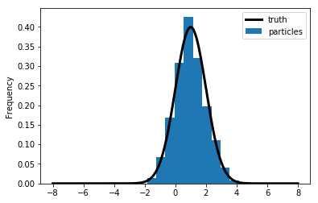
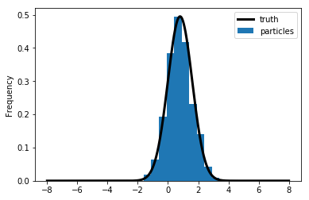
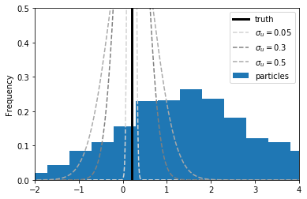
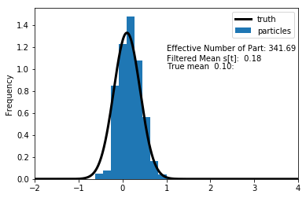
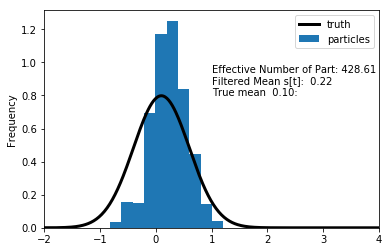
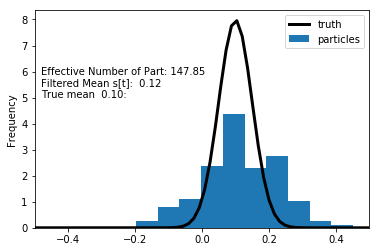

Particle Filters
1 Introduction
1.1 From Linear to Nonlinear (DSGE) Models
- While DSGE models are inherently nonlinear, the nonlinearities are often
small and decision rules are approximately linear.
- One can add certain features that generate more pronounced nonlinearities:
- stochastic volatility;
- markov switching coefficients;
- asymmetric adjustment costs;
- occasionally binding constraints.
1.2 From Linear to Nonlinear (DSGE) Models
Linear DSGE model leads to
\begin{eqnarray*} y_t &=& \Psi_0(\theta) + \Psi_1(\theta)t + \Psi_2(\theta) s_t + u_t, \quad u_t \sim N(0,\Sigma_u) ,\\ s_t &=& \Phi_1(\theta)s_{t-1} + \Phi_\epsilon(\theta) \epsilon_t, \quad \epsilon_t \sim N(0,\Sigma_\epsilon). \end{eqnarray*}
Nonlinear DSGE model leads to
\begin{eqnarray*} y_t &=& \Psi(s_t,t; \theta) + u_t, \quad u_t \sim F_u(\cdot;\theta) \label{eq_nlssnonlinear} \\ s_t &=& \Phi(s_{t-1},\epsilon_t; \theta), \quad \epsilon_t \sim F_\epsilon(\cdot;\theta). \end{eqnarray*}
1.3 Some nonlinear models in macro
Gust_2017: estimates a nonlinear DSGE subject to the zero lower bound.
Bocola_2016: a nonlinear model of sovereign default.
Fern_ndez_Villaverde_2009: a macroeconomic model with stochastic volatility.
Key question: how to estimate model using likelihood techniques?
Cannot use Kalman filter – instead use a particle filter.
1.4 Particle Filters
There are many particle filters…
We will focus on three types:
- Bootstrap PF
- A generic PF
- A conditionally-optimal PF
1.5 Filtering - General Idea
State-space representation of nonlinear DSGE model
\begin{eqnarray*} \mbox{Measurement Eq.} &:& y_t = \Psi(s_t,t; \theta) + u_t, \quad u_t \sim F_u(\cdot;\theta) \label{eq_nlssnonlinear} \\ \mbox{State Transition} &:& s_t = \Phi(s_{t-1},\epsilon_t; \theta), \quad \epsilon_t \sim F_\epsilon(\cdot;\theta). \end{eqnarray*}
Likelihood function: \(p(Y_{1:T}|\theta) = \prod_{t=1}^T {\color{red} p(y_t |Y_{1:t-1},\theta)}\)
A filter generates a sequence of conditional distributions \(s_t|Y_{1:t}\).
- Initialization at time \(t-1\): \(p( s_{t-1} |Y_{1:t-1}, \theta )\)
- Forecasting \(t\) given \(t-1\):
- Transition equation: \(p(s_{t}|Y_{1:t-1},\theta ) = \int p(s_{t}|s_{t-1}, Y_{1:t-1} , \theta ) p (s_{t-1} |Y_{1:t-1} , \theta ) ds_{t-1}\)
- Measurement equation: \({\color{red} p(y_{t}|Y_{1:t-1},\theta )} = \int p(y_{t}|s_{t}, Y_{1:t-1} , \theta ) p(s_{t} | Y_{1:t-1} , \theta ) ds_{t}\)
- Updating with Bayes theorem. Once \(y_{t}\) becomes available: \[ p(s_{t}| Y_{1:t} , \theta ) = p(s_{t} | y_{t},Y_{1:t-1} , \theta ) = \frac{ p(y_{t}|s_{t},Y_{1:t-1} , \theta ) p(s_{t} |Y_{1:t-1} , \theta )}{ p(y_{t}|Y_{1:t-1}, \theta )} \]
1.6 Bootstrap Particle Filter
\end{enumerate}
1.7 Bootstrap Particle Filter
\end{enumerate}
1.8 Bootstrap Particle Filter
\end{enumerate}
1.9 Bootstrap Particle Filter
\end{enumerate}
1.10 Likelihood Approximation
1.11 The Role of Measurement Errors
1.12 An empirical introduction to BSPF
Let’s check the BSPF on a linear process
\begin{eqnarray*} s_t &=& \rho s_{t-1} + \sigma_{e} \epsilon_t, \quad \epsilon_t\sim N(0,1) \\ y_t &=& 2 s_t + \sigma_u u_t, \quad u_t \sim N(0,1) \end{eqnarray*}
Let’s also assume that \(s_0 \sim N(1,1)\).
\(\rho = 0.8\).
\(\sigma_{e} = 0.1\)
We are going to go through one iteration as the particle filter, with \(M = 1000\) particles.
1.13 Initialization
To obtain draws from \(s_0\), we draw 1000 particles from a \(N(1,1)\).

1.14 Forecasting \(s_1\)
For each of the 1000 particles, we simulate from \(s_1^i = \rho s_0^i + \sigma_e e^i\) with \(e^i \sim N(0,1)\).

1.15 Updating \(s_1\)
Now it’s time to reweight the particles based on the how well they
actually predicted \(y_1\).
To predict \(y_1\), we simply multiply \(s_t^i\) by 2.
How good is this prediction, let’s think about in the context of ME.
\(y_1 = 0.2, \quad \sigma_u \in\{0.05, 0.3, 0.5\}\)
If the ME is very small, the only particles that make very accurate predictions are worthwhile.
1.16 Predicting \(y_1\)

1.17 Updated \(s_1, \sigma_u = 0.3\)

1.18 Updated \(s_1, \sigma_u = 0.5\)

1.19 Updated \(s_1, \sigma_u = 0.05\)

1.20 Generic Particle Filter
\item {\bf Likelihood Approximation.} Same as BS PF \end{enumerate}
1.21 Asymptotics
1.22 Asymptotics
1.23 Adapting the Generic PF
1.24 More on Conditionally-Linear Models
1.25 More on Conditionally-Linear Models
1.26 More on Conditionally-Linear Models
1.27 Particle Filter For Conditionally Linear Models
\end{enumerate}
1.28 Nonlinear and Partially Deterministic State Transitions
1.29 Degenerate Measurement Error Distributions
1.30 Next Steps
1.31 Illustration 1: Small-Scale DSGE Model
Parameter Values For Likelihood Evaluation
\begin{center} \begin{tabular}{lcclcc} \hline\hline Parameter & $\theta^{m}$ & $\theta^{l}$ & Parameter & $\theta^{m}$ & $\theta^{l}$ \\ \hline $\tau$ & 2.09 & 3.26 & $\kappa$ & 0.98 & 0.89 \\ $\psi_1$ & 2.25 & 1.88 & $\psi_2$ & 0.65 & 0.53 \\ $\rho_r$ & 0.81 & 0.76 & $\rho_g$ & 0.98 & 0.98 \\ $\rho_z$ & 0.93 & 0.89 & $r^{(A)}$ & 0.34 & 0.19 \\ $\pi^{(A)}$ & 3.16 & 3.29 & $\gamma^{(Q)}$ & 0.51 & 0.73 \\ $\sigma_r$ & 0.19 & 0.20 & $\sigma_g$ & 0.65 & 0.58 \\ $\sigma_z$ & 0.24 & 0.29 & $\ln p(Y|\theta)$ & -306.5 & -313.4 \\ \hline \end{tabular} \end{center}1.32 Likelihood Approximation
Notes: The results depicted in the figure are based on a single run of the bootstrap PF (dashed, \(M=40,000\)), the conditionally-optimal PF (dotted, \(M=400\)), and the Kalman filter (solid).
1.33 Filtered State
Notes: The results depicted in the figure are based on a single run of the bootstrap PF (dashed, \(M=40,000\)), the conditionally-optimal PF (dotted, \(M=400\)), and the Kalman filter (solid).
1.34 Distribution of Log-Likelihood Approximation Errors}
Notes: Density estimate of \(\hat{\Delta}_1 = \ln \hat{p}(Y_{1:T}|\theta)- \ln p(Y_{1:T}|\theta)\) based on \(N_{run}=100\) runs of the PF. Solid line is \(\theta = \theta^m\); dashed line is \(\theta = \theta^l\) (\(M=40,000\)).
1.35 Distribution of Log-Likelihood Approximation Errors}
Notes: Density estimate of \(\hat{\Delta}_1 = \ln \hat{p}(Y_{1:T}|\theta)- \ln p(Y_{1:T}|\theta)\) based on \(N_{run}=100\) runs of the PF. Solid line is bootstrap particle filter (\(M=40,000\)); dotted line is conditionally optimal particle filter (\(M=400\)).
1.36 Summary Statistics for Particle Filters
Notes: \(\hat{\Delta}_1 = \ln \hat{p}(Y_{1:T}|\theta) - \ln p(Y_{1:T}|\theta)\) and \(\hat{\Delta}_2 = \exp[ \ln \hat{p}(Y_{1:T}|\theta) - \ln p(Y_{1:T}|\theta) ] - 1\). Results are based on \(N_{run}=100\) runs of the particle filters.
1.37 Great Recession and Beyond
Notes: Solid lines represent results from Kalman filter. Dashed lines correspond to bootstrap particle filter (\(M=40,000\)) and dotted lines correspond to conditionally-optimal particle filter (\(M=400\)). Results are based on \(N_{run}=100\) runs of the filters.
1.38 Great Recession and Beyond
Notes: Solid lines represent results from Kalman filter. Dashed lines correspond to bootstrap particle filter (\(M=40,000\)) and dotted lines correspond to conditionally-optimal particle filter (\(M=400\)). Results are based on \(N_{run}=100\) runs of the filters.
1.39 Great Recession and Beyond
Notes: Solid lines represent results from Kalman filter. Dashed lines correspond to bootstrap particle filter (\(M=40,000\)) and dotted lines correspond to conditionally-optimal particle filter (\(M=400\)). Results are based on \(N_{run}=100\) runs of the filters.
1.40 SW Model: Distr. of Log-Likelihood Approximation Errors
Notes: Density estimates of \(\hat{\Delta}_1 = \ln \hat{p}(Y|\theta)- \ln p(Y|\theta)\) based on \(N_{run}=100\). Solid densities summarize results for the bootstrap (BS) particle filter; dashed densities summarize results for the conditionally-optimal (CO) particle filter.
1.41 SW Model: Distr. of Log-Likelihood Approximation Errors
Notes: Density estimates of \(\hat{\Delta}_1 = \ln \hat{p}(Y|\theta)- \ln p(Y|\theta)\) based on \(N_{run}=100\). Solid densities summarize results for the bootstrap (BS) particle filter; dashed densities summarize results for the conditionally-optimal (CO) particle filter.
1.42 SW Model: Summary Statistics for Particle Filters
Notes: \(\hat{\Delta}_1 = \ln \hat{p}(Y_{1:T}|\theta) - \ln p(Y_{1:T}|\theta)\) and \(\hat{\Delta}_2 = \exp[ \ln \hat{p}(Y_{1:T}|\theta) - \ln p(Y_{1:T}|\theta) ] - 1\). Results are based on \(N_{run}=100\).
2 Tempered Particle Filtering
2.1 Tempered Particle Filter
- Use sequence of distributions between the forecast and updated state distributions.
- Candidates? Well, the PF will work arbitrarily well when \(\Sigma_{u}\rightarrow\infty\).
- Reduce measurement error variance from an inflated initial level \(\Sigma_u(\theta)/{\color{blue}\phi_1}\) to the nominal level \(\Sigma_u(\theta)\).
2.2 The Key Idea
Define
\begin{eqnarray*} p_n(y_t|s_t,\theta) &\propto& {\color{blue}\phi_n^{d/2}} |\Sigma_u(\theta)|^{-1/2}\exp \bigg\{ - \frac{1}{2} (y_t - \Psi(s_t,t;\theta))' \\ && \times {\color{blue}\phi_n} \Sigma_u^{-1}(\theta)(y_t - \Psi(s_t,t;\theta)) \bigg\}, \end{eqnarray*}where: \[ {\color{blue} \phi_1 < \phi_2 < \ldots < \phi_{N_\phi} = 1}. \]
- Bridge posteriors given \(s_{t-1}\): \[ p_n(s_t|y_t,s_{t-1},\theta) \propto p_n(y_t|s_t,\theta) p(s_t|s_{t-1},\theta). \] \item bridge posteriors given \(Y_{1:t-1}\): \[ p_n(s_t|Y_{1:t})= \int p_n(s_t|y_t,s_{t-1},\theta) p(s_{t-1}|Y_{1:t-1}) ds_{t-1}. \]
2.3 Algorithm Overview
- For each \(t\) we start with the BS-PF iteration by simulating the state-transition equation forward.
- Incremental weights are obtained based on inflated measurement error variance \(\Sigma_u/{\color{blue}\phi_1}\).
- Then we start the tempering iterations…
- After the tempering iterations are completed we proceed to \(t+1\)…
2.4 Overview}
- If \(N_{\phi} = 1\), this collapses to the Bootstrap particle filter.
- For each time period \(t\), we embed a ``static’’ SMC sampler used for parameter estimation
Iterate over \(n=1,\ldots,N_\phi\):
- Correction step: change particle weights (importance sampling)
- Selection step: equalize particle weights (resampling of particles)
- Mutation step: change particle values (based on Markov transition kernel generated with Metropolis-Hastings algorithm)
- Each step approximates the same \(\int h(s_t) p_n(s_{t}|Y_{1:t},\theta) ds_t\).
2.5 An Illustration: \(p_n(s_t|Y_{1:t})\), \(n=1,\ldots,N_\phi\).
2.6 Choice of \(\phi_n\)
- Based on Geweke and Frischknecht (2014).
- Express post-correction inefficiency ratio as
\[
\mbox{InEff}(\phi_n)
= \frac{\frac{1}{M} \sum_{j=1}^M \exp [ -2(\phi_n-\phi_{n-1}) e_{j,t}] }{ \left(\frac{1}{M} \sum_{j=1}^M \exp [ -(\phi_n-\phi_{n-1}) e_{j,t}] \right)^2}
\]
where
\[
e_{j,t} = \frac{1}{2} (y_t - \Psi(s_t^{j,n-1},t;\theta))' \Sigma_u^{-1}(y_t -
\Psi(s_t^{j,n-1},t;\theta)).
\]
- Pick target ratio \(r^*\) and solve equation \(\mbox{InEff}(\phi_n^*) = r^*\) for \(\phi_n^*\).
\end{frame}
2.7 Small-Scale Model: PF Summary Statistics
2.8 Embedding PF Likelihoods into Posterior Samplers
- Likelihood functions for nonlinear DSGE models can be approximated by the PF.
- We will now embed the likelihood approximation into a posterior sampler:
PFMH Algorithm (a special case of PMCMC).
- The book also discusses \(SMC^2\).
2.9 Embedding PF Likelihoods into Posterior Samplers}
- \(\{ p(Y|\theta), p(\theta|Y), p(Y) \}\), which are related according to:
\[ p(\theta|Y) = \frac{p(Y|\theta) p(\theta)}{p(Y)} , \quad p(Y) = \int p(Y|\theta) p(\theta) d\theta \]
- \(\{ \hat{p}(Y|\theta), \hat{p}(\theta|Y), \hat{p}(Y) \}\), which are related according to:
\[ \hat{p}(\theta|Y) = \frac{\hat{p}(Y|\theta) p(\theta)}{\hat{p}(Y)} , \quad \hat{p}(Y) = \int \hat{p}(Y|\theta) p(\theta) d\theta. \]
- Surprising result (Andrieu, Docet, and Holenstein, 2010): under certain conditions we can replace \(p(Y|\theta)\) by \(\hat{p}(Y|\theta)\) and still obtain draws from \(p(\theta|Y)\).
2.10 PFMH Algorithm
For \(i=1\) to \(N\):
- Draw \(\vartheta\) from a density \(q(\vartheta|\theta^{i-1})\).
- Set \(\theta^i = \vartheta\) with probability \[ \alpha(\vartheta | \theta^{i-1} ) = \min \left\{ 1, \; \frac{ \hat{p}(Y| \vartheta )p(\vartheta) / q(\vartheta | \theta^{i-1}) }{ \hat{p}(Y|\theta^{i-1}) p(\theta^{i-1}) / q(\theta^{i-1} | \vartheta) } \right\} \] and \(\theta^{i} = \theta^{i-1}\) otherwise. The likelihood approximation \(\hat{p}(Y|\vartheta)\) is computed using a particle filter.
2.11 Why Does the PFMH Work?
- At each iteration the filter generates draws \(\tilde{s}_t^j\) from the proposal distribution \(g_t(\cdot|s_{t-1}^j)\).
- Let \(\tilde{S}_t = \big( \tilde{s}_t^1,\ldots,\tilde{s}_t^M \big)'\) and denote the entire sequence of draws by \(\tilde{S}_{1:T}^{1:M}\).
- Selection step: define a random variable \(A_t^j\) that contains this ancestry information. For instance, suppose that during the resampling particle \(j=1\) was assigned the value \(\tilde{s}_t^{10}\) then \(A_t^1=10\). Let \(A_t = \big( A_t^1, \ldots, A_t^N \big)\) and use \(A_{1:T}\) to denote the sequence of \(A_t\)’s.
- PFMH operates on an enlarged probability space: \(\theta\), \(\tilde{S}_{1:T}\) and \(A_{1:T}\).
2.12 Why Does the PFMH Work?
- Use \(U_{1:T}\) to denote random vectors for \(\tilde{S}_{1:T}\) and \(A_{1:T}\). \(U_{1:T}\) is an array of \(iid\) uniform random numbers.
- The transformation of \(U_{1:T}\) into \((\tilde{S}_{1:T},A_{1:T})\) typically depends on \(\theta\) and \(Y_{1:T}\), because the proposal distribution \(g_t(\tilde{s}_t|s_{t-1}^j)\) depends both on the current observation \(y_t\) as well as the parameter vector \(\theta\).
- E.g., implementation of conditionally-optimal PF requires sampling from a \(N(\bar{s}_{t|t}^j,P_{t|t})\) distribution for each particle \(j\). Can be done using a prob integral transform of uniform random variables.
- We can express the particle filter approximation of the likelihood function as \[ \hat{p}(Y_{1:T}|\theta) = g(Y_{1:T}|\theta,U_{1:T}). \] where \[ U_{1:T} \sim p(U_{1:T}) = \prod_{t=1}^T p(U_t). \]
2.13 Why Does the PFMH Work?
- Define the joint distribution \[ p_g\big( Y_{1:T},\theta,U_{1:T} \big) = g(Y_{1:T}|\theta,U_{1:T}) p\big(U_{1:T} \big) p(\theta). \]
- The PFMH algorithm samples from the joint posterior
\[
p_g\big( \theta, U_{1:T} | Y_{1:T} \big) \propto g(Y|\theta,U_{1:T}) p\big(U_{1:T} \big) p(\theta)
\]
and discards the draws of \(\big( U_{1:T} \big)\).
- For this procedure to be valid, it needs to be the case that PF approximation is unbiased: \[ \mathbb{E}[\hat{p}(Y_{1:T}|\theta)] = \int g(Y_{1:T}|\theta,U_{1:T})p\big(U_{1:T} \big) d\theta = p(Y_{1:T}|\theta). \]
2.14 Why Does the PFMH Work?
- We can express acceptance probability directly in terms of \(\hat{p}(Y_{1:T}|\theta)\).
- Need to generate a proposed draw for both \(\theta\) and \(U_{1:T}\): \(\vartheta\) and \(U_{1:T}^*\).
- The proposal distribution for \((\vartheta,U_{1:T}^*)\) in the MH algorithm is given by \(q(\vartheta|\theta^{(i-1)}) p(U_{1:T}^*)\).
- No need to keep track of the draws \((U_{1:T}^*)\).
MH acceptance probability:
\begin{eqnarray*} \alpha(\vartheta|\theta^{i-1}) &=& \min \; \left\{ 1, \frac{ \frac{ g(Y|\vartheta,U^*)p(U^*) p(\vartheta)}{ q(\vartheta|\theta^{(i-1)}) p(U^*) } }{ \frac{ g(Y|\theta^{(i-1)},U^{(i-1)})p(U^{(i-1)}) p(\theta^{(i-1)})}{ q(\theta^{(i-1)}|\theta^*) p(U^{(i-1)})} } \right\} \\ &=& \min \; \left\{ 1, \frac{ \hat{p}(Y|\vartheta)p(\vartheta) \big/ q(\vartheta|\theta^{(i-1)}) }{ \hat{p}(Y|\theta^{(i-1)})p(\theta^{(i-1)}) \big/ q(\theta^{(i-1)}|\vartheta) } \right\}. \end{eqnarray*}
2.15 Small-Scale DSGE: Accuracy of MH Approximations
- Results are based on \(N_{run}=20\) runs of the PF-RWMH-V algorithm.
- Each run of the algorithm generates \(N=100,000\) draws and the first \(N_0=50,000\) are discarded.
- The likelihood function is computed with the Kalman filter (KF), bootstrap particle filter (BS-PF, \(M=40,000\)) or conditionally-optimal particle filter (CO-PF, \(M=400\)).
- ``Pooled’’ means that we are pooling the draws from the \(N_{run}=20\) runs to compute posterior statistics.
2.16 Autocorrelation of PFMH Draws
Notes: The figure depicts autocorrelation functions computed from the output of the 1 Block RWMH-V algorithm based on the Kalman filter (solid), the conditionally-optimal particle filter (dashed) and the bootstrap particle filter (solid with dots).
2.17 Small-Scale DSGE: Accuracy of MH Approximations
2.18 Computational Considerations
- We implement the PFMH algorithm on a single machine, utilizing up to
twelve cores.
- For the small-scale DSGE model it takes 30:20:33 [hh:mm:ss] hours to generate 100,000 parameter draws using the bootstrap PF with 40,000 particles. Under the conditionally-optimal filter we only use 400 particles, which reduces the run time to 00:39:20 minutes.
3 Bibliography
3.1 References
Bibliography
- [Gust_2017] Gust, Herbst, , López-Salido & Smith, The Empirical Implications of the Interest-Rate Lower Bound, American Economic Review, 107(7), 1971–2006 (2017). link. doi.
- [Bocola_2016] Bocola, The Pass-Through of Sovereign Risk, Journal of Political Economy, 124(4), 879–926 (2016). link. doi.
- [Fern_ndez_Villaverde_2009] Fernández-Villaverde, Guerrón-Quintana, Pablo, Rubio-Ramírez & Uribe, Risk Matters: The Real Effects of Volatility Shocks, , (2009). link. doi.